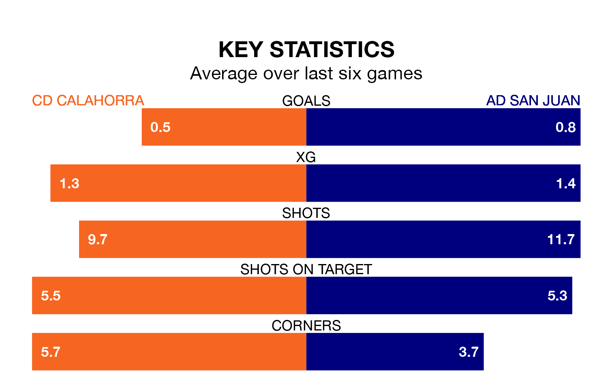

CD Calahorra are heavy favourites to keep all three points at home in Sunday's kick-off against AD San Juan.
Calahorra, who sit 10th in Segunda División RFEF Group 2 with 18 games played, are priced at 1.6 to seal victory at the Estadio La Planilla.
Sitting seven places and 10 points behind them in the table, San Juan are 5.3 to win with *Betting Company*, while the draw is at 3.5.
Calahorra are in mixed form in Segunda División RFEF Group 2, with two wins and two draws from their last six games.
With no wins and a draw over that period, San Juan's form is much worse – they have taken one point from 18, compared to the home team's eight.
With 11 goals in 18 games so far this season, the visitors are the league's third-lowest scorers with 0.6 goals per game. And they are conceding more than average, letting in 35 goals at a rate of 1.9 per game.
Calahorra are also below average scorers, with 0.7 goals per game, compared to a league average of 1.1. They have conceded 1.1 goals per game.
Calahorra's last match was on January 13, a 2-0 win against UD Mutilvera.
San Juan lost 2-0 against Barakaldo CF last time out, also on January 13.
Updated: 10:02 (UTC), 19/01/24